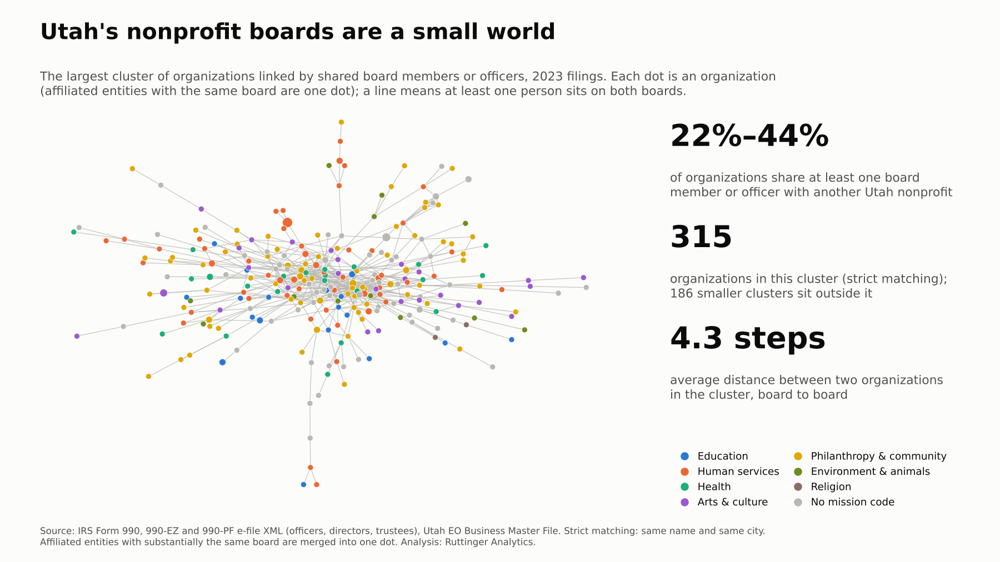
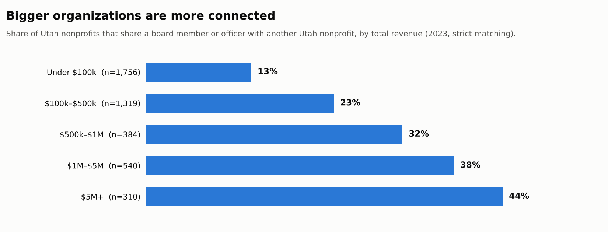

Utah’s nonprofit boards are a small world
Utah Nonprofits, by the Numbers #3
Every Form 990 lists the organization’s officers, directors and trustees by name. Put those lists side by side and you can see something no single filing shows: the people who sit on more than one board, and the organizations they connect.
I did that for every Utah organization that filed a 990, 990-EZ or 990-PF for tax year 2023. In the filings I could see, between a fifth and two-fifths of Utah nonprofits share at least one board member or officer with another Utah nonprofit.
The number

| 2023 filings | Strict matching | Loose matching |
|---|---|---|
| Organizations with a published board list | 4,341 | 4,341 |
| After merging affiliated entities | 4,156 | 4,126 |
| Share linked to another organization through a shared person | 22% | 44% |
| People who connect two or more unrelated organizations | 906 | 1,934 |
| Largest connected cluster | 315 organizations | 1,505 organizations |
| Average distance within that cluster, board to board | 4.3 steps | 5.5 steps |
Why two columns? The IRS lists people by name only, and names are a messy way to match. Strict matching counts two seats as the same person only if the name matches and both organizations file from the same city. That misses real people who serve on boards in two cities, so it’s a floor. Loose matching uses the name alone. That joins different people who happen to share a common name, so it’s a ceiling. The truth is somewhere in between.
I also merged affiliated entities: organizations whose boards are substantially the same people, like a charity and its supporting foundation, or a set of housing corporations run by one sponsor. Without that step, one family of organizations can look like a dense web of “connections” that are really one board wearing several hats. In 2023 that merged 294 organizations into 109 families.
Bigger organizations are more connected

Even with strict matching, 44% of organizations with $5 million or more in revenue share a board member with another Utah nonprofit, compared with 13% of those under $100,000. Full 990 filers are about twice as likely to be connected (32%) as 990-EZ filers or private foundations (15% each).
By mission area, housing organizations are the most connected (43%, though it’s a small group of 63), followed by community improvement (31%), environment (30%), health (27%) and arts (27%) organizations. International (11%), animal-related (15%) and sports and recreation (15%) organizations are the least.
What it means
For organizations, your board is a network, whether you use it that way or not. A director who also sits on another board brings that organization’s habits with them: how it budgets, what it reports, which funders it trusts.
For funders, the connected core is where ideas travel fastest. A practice adopted by a few well-connected boards has a short path to many others.
For anyone recruiting board members, the pool is smaller than it looks. Between about 120 and 370 people (strict and loose matching) connect three or more unrelated organizations. That’s a strength (experience) and a risk (fatigue, and the same voices everywhere).
What this says about analytics maturity
Practices spread through board seats. In my experience, the moment an organization starts to want better data is often when a board member says, “At my other board, we see this every month.” A finance committee chair who has seen a good dashboard asks for one. A director who has watched an evaluation change a program decision asks what yours would show.
That makes connected board members the sector’s informal channel for analytics maturity. In stage terms, this is about action and learning: the habit of using what you find, which spreads person to person more than it’s taught. If you serve on more than one board, you’re already part of that channel. A practical step: bring one report, metric or meeting habit from your best-run board to your next meeting at another.
What the data can’t see
- Names are imperfect. Strict matching undercounts real connections, and loose matching overcounts them. I report both rather than guess.
- Only organizations that list their board appear. That leaves out 990-N filers and churches, which is most of Utah’s smallest organizations (see post #1).
- Some connections are by design. A school’s PTA and its foundation, or a hospital and its foundation, often share people on purpose. Merging affiliated entities removes the clearest cases but not all.
- A connection isn’t influence. Two organizations sharing a treasurer doesn’t mean they share practices, only that the path exists.
- No individuals are named, here or in the chart.
Method
Data and matching
- Seats: Officers, directors and trustees listed on 2023 Form 990 (Part VII; key employees and former officers excluded), 990-EZ (Part IV) and 990-PF (Part VIII) e-filed returns of Utah organizations in the IRS Exempt Organizations Business Master File: 28,952 seats at 4,341 organizations. Institutional trustees (banks, trust companies) and non-person entries were removed.
- People: Names are normalized (uppercase, punctuation and suffixes such as JR, MD and CPA removed). Strict matching adds the filer’s city.
- Affiliated entities: Two organizations are merged if they share at least two people and those people make up at least half of the smaller board.
- Network: Organizations (or merged families) are linked when at least one person sits on both boards. Distances are shortest paths within the largest connected cluster.
- Revenue bands use total revenue on the 2023 return.
The query (Cypher, against the Utah 990 graph)
// Organizations that share at least one person in the same tax year
MATCH (o1:Organization)<-[r1:HAS_ROLE]-(p:Person)-[r2:HAS_ROLE]->(o2:Organization)
WHERE o1 <> o2 AND r1.tax_year = 2023 AND r2.tax_year = 2023
AND o1.in_bmf AND o2.in_bmf
AND (r1.is_director OR r1.is_officer OR r1.is_director IS NULL)
RETURN count(DISTINCT o1) AS interlocked_orgs, count(DISTINCT p) AS bridge_people;The published figures add the same-city rule and the affiliate merge, which I ran in Python on the same tables.
Where does your organization stand?
Your board’s experience elsewhere is a resource. Take the short analytics maturity assessment and bring the results to your next board meeting. It’s a good way to start the “how do they do it at your other board?” conversation.
Next week: how old is the public picture of a nonprofit? The lag between the end of a fiscal year and the day its 990 becomes public.